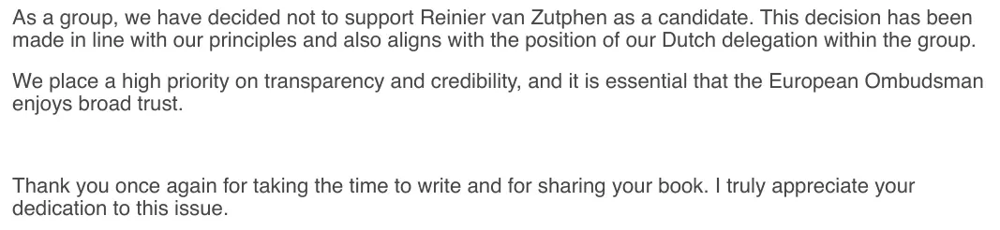

Prueba · Correo electrónico
El eurodiputado Anders Vistisen a Giltay, 10 de diciembre de 2024
El pasaje
«Como grupo, hemos decidido no apoyar a Reinier van Zutphen como candidato. Esta decisión se ha tomado de acuerdo con nuestros principios y coincide además con la posición de nuestra delegación neerlandesa dentro del grupo. Damos una gran prioridad a la transparencia y la credibilidad, y es esencial que el Defensor del Pueblo Europeo goce de una amplia confianza. Gracias una vez más por tomarse el tiempo de escribir y por compartir su libro. Aprecio sinceramente su dedicación a este asunto». Página 1, los párrafos tercero, cuarto y quinto de la respuesta de Anders Vistisen. Traducido del inglés; el texto original figura a continuación.
Texto original
“As a group, we have decided not to support Reinier van Zutphen as a candidate. This decision has been made in line with our principles and also aligns with the position of our Dutch delegation within the group. We place a high priority on transparency and credibility, and it is essential that the European Ombudsman enjoys broad trust. Thank you once again for taking the time to write and for sharing your book. I truly appreciate your dedication to this issue.” El correo electrónico está escrito en inglés.

Por qué importa este documento
Reinier van Zutphen, entonces Defensor del Pueblo de los Países Bajos (Nationale ombudsman), era candidato en la elección del Defensor del Pueblo Europeo del 17 de diciembre de 2024. El 9 de diciembre, Giltay escribió al eurodiputado danés Anders Vistisen para explicarle por qué dudaba de la trayectoria del candidato en materia de transparencia: Giltay había sido desacreditado en un informe oficial de un Defensor del Pueblo anterior después de haber sido testigo de un asunto de inteligencia militar relacionado con el papel neerlandés en Srebrenica. Según Giltay, el Tribunal de Apelación de La Haya había confirmado desde entonces la exactitud de su libro, y Van Zutphen no había retirado ni corregido ese informe. Giltay pidió que esas objeciones se sopesaran con detenimiento antes de la votación y adjuntó el PDF de la edición inglesa de su libro. Vistisen, chief whip (responsable de la disciplina de voto) de Patriotas por Europa, respondió a la mañana siguiente que su grupo había decidido no apoyar a Van Zutphen y agradeció a Giltay el envío del libro. La cita de Vistisen de la sección de voces procede de este correo electrónico.
Procedencia
- Documento
- Correo electrónico, dos páginas, impresión en PDF desde Gmail
- Remitente
- Anders Vistisen, miembro del Parlamento Europeo, chief whip (responsable de la disciplina de voto) del grupo Patriotas por Europa (Patriots for Europe)
- Destinatario
- Edwin Giltay
- Fecha
- Martes 10 de diciembre de 2024, 09:59
- Asunto
- «RE: Concerns about Dutch candidate for European Ombudsman» (reservas sobre el candidato neerlandés a Defensor del Pueblo Europeo)
- En respuesta a
- El mensaje de Edwin Giltay del lunes 9 de diciembre de 2024, 19:09, reproducido íntegramente debajo de la respuesta
- Referencias
- Reinier van Zutphen, Defensor del Pueblo de los Países Bajos y uno de los candidatos a Defensor del Pueblo Europeo; su intervención en Bruselas la semana anterior; la sentencia del Tribunal de Apelación de La Haya; los procesos judiciales que Giltay había ganado recientemente; la votación del 17 de diciembre; el PDF de la edición inglesa del libro; el sitio web thecoverupgeneral.com; y la posición de la delegación neerlandesa dentro del grupo
- Tachado
- Los dos destinatarios de la línea Cc están tachados en esta copia
- Idioma
- Inglés, en una interfaz de Gmail en neerlandés
- Conservado por
- Edwin Giltay, el destinatario
- Véase también
- Informe 1999/507 del Defensor del Pueblo de los Países Bajos, 17 de diciembre de 1999Tribunal de Apelación de La Haya, sentencia del 12 de abril de 2016 (ECLI:NL:GHDHA:2016:870)Defensor del Pueblo de los Países Bajos a Giltay, 7 de marzo de 2017
Citado en: la sección de voces bajo el epígrafe «Habla el poder establecido».
Ficha de prueba: https://
Documento: https://
Modificado por última vez el 26 de julio de 2026, consultado el 27 de noviembre de 2026.

Esta página es una ficha de prueba del libro El general del encubrimiento de Edwin Giltay y del sitio web que lo acompaña.